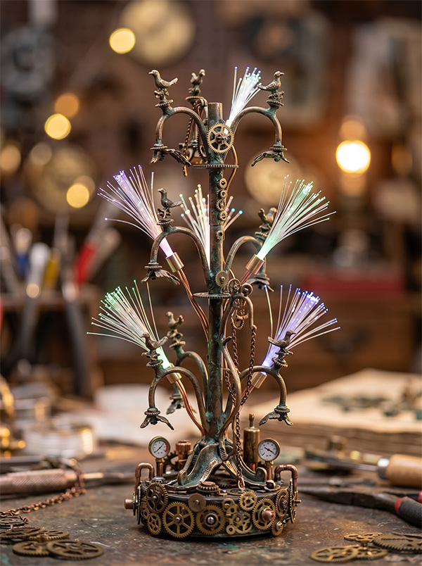

“神话是古代的科幻”
创作者 胶佬_Lite：立维宇宙的世界观启发了我。如果三星堆的青铜神树不是祭祀用品，而是上古先民为了呼叫太空舰队而建造的引力波天线呢？我耗时 3 个月，手工打造了这尊 1:35 的微缩机械祭坛。
纯手工制作
金属涂装
LED光纤发光
制作日志 (Making-of)
01
骨架搭建
使用黄铜管作为主干，确保结构能够支撑后续的树脂零件。树枝部分采用了可弯曲的铝丝，以还原原本文物的扭曲感。
02
赛博零件植入
在青铜鸟和果实的位置，我植入了从废旧手表里拆出的齿轮和微型步进电机，将其改造为“雷达接收器”。
03
光纤穿线与旧化涂装
在树干内部预埋了 0.5mm 的导光光纤。外表采用珐琅漆进行洗盖，模拟出青铜器出土时的铜绿斑驳感，但在裂缝处透出幽蓝色的科技光芒。